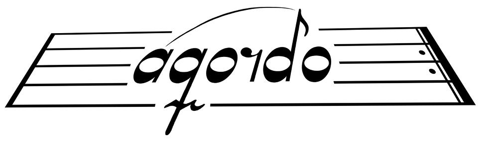

Affärsidén föddes 2009 och har mognat steg för steg sedan dess. Konceptet vann ett förstapris i delmoment 1 i tävlingen Venture Cup Syd 2010.
William Renco, som äger och driver projektet, har bakgrund som IT-konsult, officer och lärare samt 20 års erfarenhet som körsångare. Han blev tillsammans med sina sångarkamrater i Lunds Studentsångare världsmästare i tävlingsklassen manskör, juli 2010 (World Choir Games, Shaoxing, Kina).
Under 2012 förevisade Aqordo en prototyp av helhetskonceptet och dess två huvuddelar: iPad-applikation resp webbportal med dynamiska musikstycken.
Välkommen att kontakta oss för en demonstration!